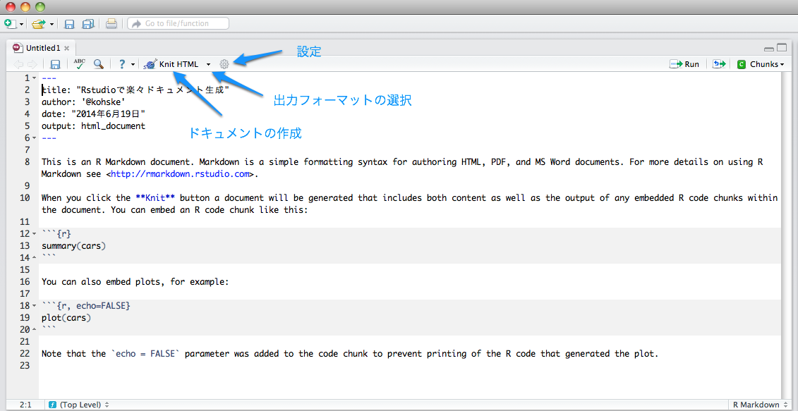

一言でいうと、Rstudio上でRマークダウンからHTML/PDF/MS Wordレポート、ウェブスライド、Shiny入りのレポートなどを作成できるようになりました。以下、解説です。
シリーズ Useful R 9 「ドキュメント・プレゼンテーション生成」 第8章ではRstudioのドキュメント生成支援機能について説明しています。 本書の内容は執筆時(2014年3月)の最新公式バージョン0.98.501をターゲットにしています。
2014年6月に最新公式バージョンが0.98.932となり、ドキュメント生成支援機能が大幅にアップデートされました。 ドキュメント変換にrmarkdownパッケージを採用しています。これに伴いユーザインタフェースにも若干の変更があります。rmarkdownパッケージやRマークダウンの書式の変更点については解説記事 (rmarkdownパッケージで楽々ドキュメント生成)をご覧ください。この解説記事ではRstudioについての変更点を説明します。
なお、rmarkdownパッケージも裏ではknitrが仕事しているので、本書中のknitrの関する解説内容には大きな変更はありません。
従来は、[Compile Notebook]をクリックするとタイトルや作成者を記入するダイアログが開きました(本書8.2節)。 新しいRstudioではタイトルや作成者はRスクリプトのYAMLフロントマターを使って次のように指定することができます。 YAMLフロントマターではこれ以外の項目も設定可能です。詳細は解説記事 (rmarkdownパッケージで楽々ドキュメント生成)をご覧ください。
#' ---
#' title: rmarkdownパッケージで楽々ドキュメント生成
#' author: "@kohske"
#'---省略するとファイル名がタイトルに、ユーザ名が作成者になります。
新しいRstudioではRマークダウンファイル(.Rmd)からHTML、PDF、MS Wordの各種レポート、ウェブスライドやBeamerスライド、Shinyドキュメントを作成できるようになっています。
---で囲まれた部分はYAMLフロントマターです。ドキュメントのメタ情報を指定します。それ以降はテンプレなので適当に削除して大丈夫です。 [Knit HTML]をクリックするとレポートが作成されます。
上のキャプチャにあるように、新しいRstudioではRマークダウンの編集パネルの中でレポート生成に関する設定を行うことができます。
新しいRStudioではウェブレポートやウェブスライドの中にShinyウェブアプリを埋め込むことができます。
R Presentation (本書8.4節)については、ユーザインタフェースに若干の変更はありますが、今のところ大きな変更はありません。
Enjoy!!
コンタクトは takahashi.kohske@gmail.com またはTwitter @kohskeまで。本業はこちら。